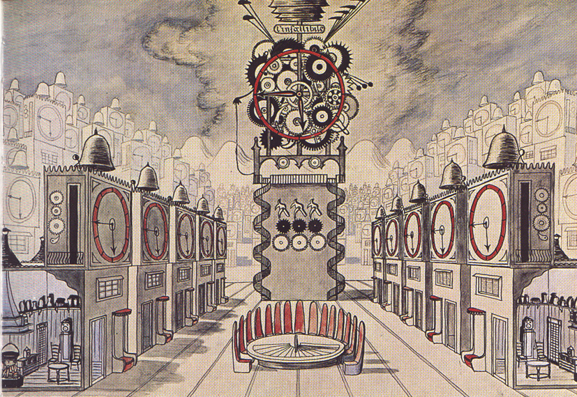

La costruzione
della bellezza:
la basilica di San Pardo

“Colonna di chiesa è l’altar maggiore, dento ci siede il nostro protettore”.
Nei secoli la cattedrale si è arricchita di tesori d'arte che i vescovi hanno commissionato per testimoniare la fede di un intero popolo a Dio e al loro patrono.
“Entrandosi per la porta maggiore si vede la Chiesa divisa in tre navate, fatta di struttura Gotica; e avendo fatto rimodernare il Soffitto, come pure il Presbiterio, e gli Altari nell'anno 1733 e 1734 furono ritondati anche gli Archi, e abbelliti di stucco. All'intorno nella navata di mezzo fu fatto un gran Cornicione[...], rifatto per intero il Soffitto, ricoperto di tela, dipinto, e distribuito in tre gran quadri: uno, che rappresenta l'Assunzione della Beatissima Vergine, antica titolare della Chiesa; l'altro S.Pardo Vescovo, Titolare, e Padrone principale della Città, e Diocesi; il terzo S. Primiano Martire, altro Padrone meno principale della Città, e S. Firmiano, e S. Casto Martiri, Fratelli di S. Primiano. Le due altre navate sono fatte a volta col gusto Gotico, e rimodernate con stuchi de' tempi presenti.”
G. A. TRIA, Memorie storiche civili ed ecclesiastiche
della città e diocesi di Larino, metropoli degli antichi frentani,
Roma, 1744, p. 201
La figura di San Pardo Vescovo
Dal silenzio
di Don Claudio Cianfaglioni
Dal XIV secolo la chiesa si è trasformata più volte per adattarsi al gusto e alle esigenze liturgiche del tempo.
Oggi l'interno si presenta con il suo aspetto gotico dovuto al profondo restauro che ha interessato la struttura dagli anni '30 agli anni '50 del '900 che ha rimosso tutte le aggiunte rinascimentali e barocche, aggiunte che in parte sono state conservate nei locali della sagrestia e nel museo diocesano.
“Si entra in Sagrestia per una porta aperta nel muro, che sta a capo della nave laterale, dalla parte del Vangelo dell'Altar maggiore immediatamente dopo l'ingresso a man sinistra si sale all'organo, ed alla Sala dell'Episcopio, che chiamano la Gregoriana. Nel mezzo del muro in faccia all'ingresso della porta della Sagrestia, con essersi rimodernata la Cattedrale ci abbiamo fatto costruire anche un Altare dedicato a S.Carlo glorioso, in tutte le sue parti di marmo, come gl'altri di sopra descritti, e sopra di esso si è aperto un grand'Armario guarnito di stucchi[…].”
G. A. TRIA, Memorie storiche civili ed ecclesiastiche
della città e diocesi di Larino, metropoli degli antichi frentani,
Roma, 1744, p. 207
La Sagrestia della Cattedrale conserva, oltre alle reliquie di santi e martiri, gli arredi sacri che monsignor Tria fece realizzare per aggiornare al gusto e alla liturgia del suo tempo lo spazio gotico della basilica di San Pardo.
Al suo interno spicca il busto argenteo seicentesco di San Pardo, copia dell'originale statua commissionata da Monsignor Catalani che venne trafugato nella notte tra il 25 ed il 26 gennaio 1971.
Credits e bibliografia“A man sinistra nell'uscire dalla Cattedrale si vede un'arco ben grande di figura semicircolare, formato di pietre quadre, e sopra di esso l'edificio del nobile Campanile, attaccato alla muraglia della Cattedrale, e costruito di mattoni quadri con iscorniciatura di marmo rustico. Egli per mezzo di tre cordoni, parimente di marmo rustico , si divide in tre ordini.”
G. A. TRIA, Memorie storiche civili ed ecclesiastiche
della città e diocesi di Larino, metropoli degli antichi frentani,
Roma, 1744, p. 210
Il campanile, edificato su una cella campanaria più antica di cui non restano traccie, si eleva a destra della facciata della cattedrale.
La sua costruzione iniziò nel 1451 con un vano coperto da una volta a crociera che ospita una serie di sedili in pietra e a cui si accede da due arconi a sesto acuto.
Il campanile è organizzato su tre livelli scanditi da cornici marcapiano in pietra con paramenti in mattoni posati in opera con la tecnica dell'opus spicatum.
La struttura termina in alto con un cupolino impostato un un tamburo ottagonale che ospita quattro delle cinque campane il cui suono accompagna i tre giorni della festa in onore di San Pardo.
Affianco all’arco di volta, c’è l’iscrizione con il nome dell’architetto Giovanni da Casalbore che diede inizio alla costruzione del campanile, mentre al primo piano c’è una seconda iscrizione che riporta la data della conclusione dei lavori, ossia il 1523, ad opera del vescovo Jacopo de Petrucci e del feudatario Pappacoda.
Il campanile si caratterizza anche per la presenza di elementi di recupero di età romana, facenti parte di un mausoleo a tamburo.
Dal Tria, infine, sappiamo che nella stanza al primo piano del campanile veniva conservato l'archivio del Capitolo della cattedrale.
Sul secondo livello nel 1785 venne realizzato un orologio, opera maestro Paolo Grassi di Casacalenda che oggi, restaurato, è conservato nel museo diocesano.
Ci piace immaginare che il celebre compositore e direttore d'orchestra Adriano Lualdi, nato a Larino nel 1885, nella sua opera “Il diavolo nel campanile”, ispirata alla novella omonima di Edgar Alan Poe, abbia trovato ispirazione nei suoi ricordi di infanzia legati alla città frentana.
Bozzetto di Dino Buzzati per Il Diavolo nel campanile al Maggio Musicale Fiorentino (1954) tratto da https://www.rodoni.ch/malipiero/adrianolualdi/adrianolualdi.html
Il diavolo nel campanile. Un racconto di Edgar Allan Poe tratto da Quartaadio.it
Credits e bibliografia